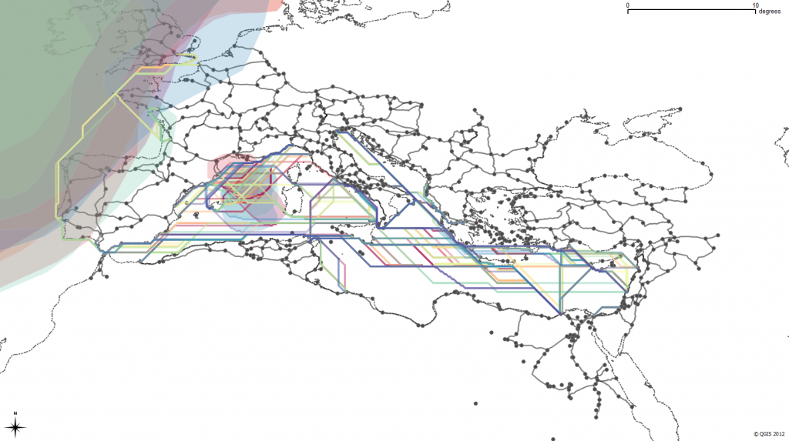
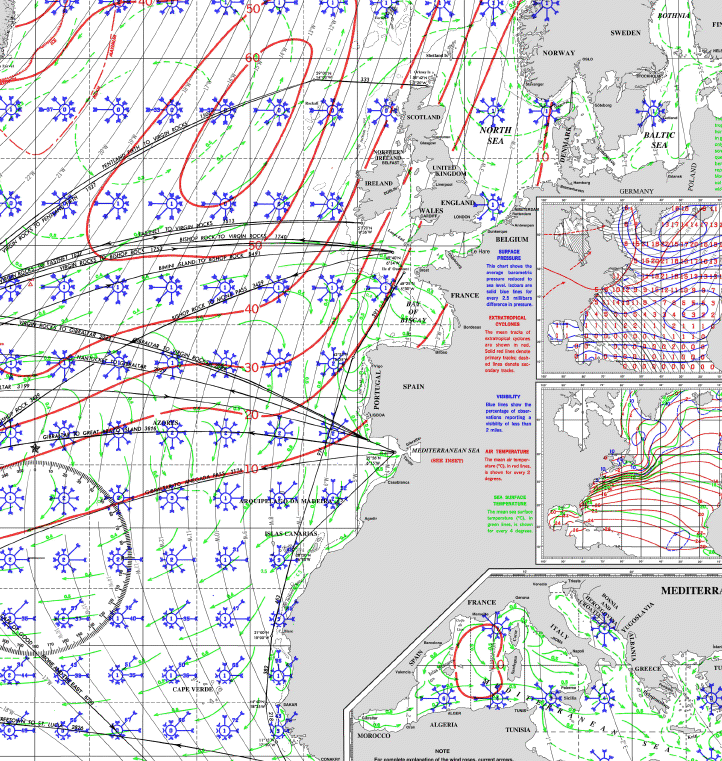
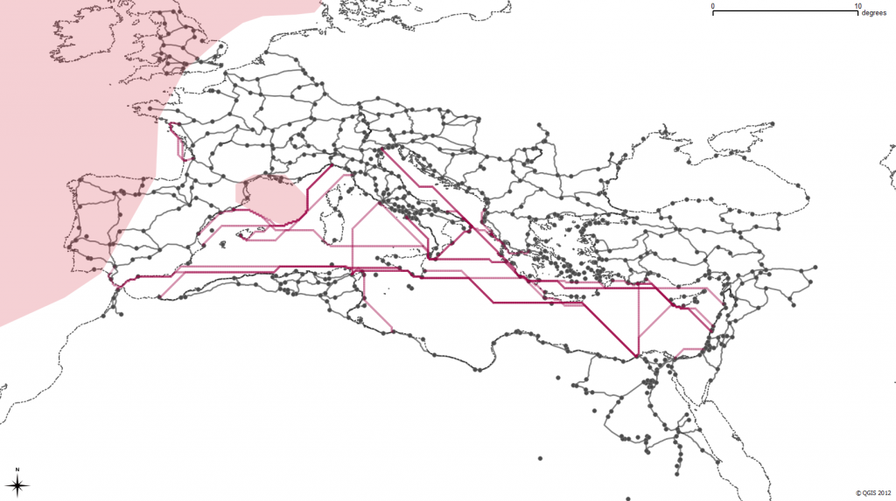

Possible paths of some historically attested Roman sea routes, constrained by monthly variation in wave height
In building a transportation network for the Roman Empire and integrating it into a model of movement in the Roman Empire, I’ve found that the shift from creating, annotating and analyzing archives to modeling systems can have a profound impact beyond the (admittedly high value of) usability of scholarly material developed during a digital humanities project. While the end result of this project will allow scholars to compute paths through a multimodal, historical transportation network, it provides two even more valuable contributions to the field at large just by virtue of it being a formalized system.
First, the model consists of several components that abstract the movement capabilities of various historical objects such as ships, armies, bulk goods and information. These discrete subsystems can easily be replaced with an alternative or competing definition of movement costs and capabilities without disrupting the modeled system as a whole. If a more complex or accurate definition of the movement capacity of an Imperial legion becomes available, it can be integrated within this model rather easily. To explain this in more detail, I’ll focus on the most computational aspect of this model: the delineation of sea routes. The length (in both distance and time) of a trip from one port to another is modeled by assuming certain capabilities on the part of Roman ships. This starts with a modern pilot chart for the Mediterranean, Black Sea and Atlantic, like this:

Such a chart contains a wealth of information on currents and wave height probabilities as well as wind force and frequency by direction. From these variables we derive an average speed by direction of three different idealized Roman ships (known in the model by the exciting names “Slow”, “Slow2″ and “Coastal”) during a month to test against a set of historically known routes. The results have been very positive–and this is what simulated sea travel in February looks like according to the model:

If you’re keeping score at home, that’s a lot of assumptions. For one, it assumes modern wind patterns match historical wind patterns. It assumes that certain wave height frequencies are impassible. It also relies on a particular definition of Roman ship speed based on wind frequency and force that could be contested or expanded. Beyond that, it provides no opportunity for probabilistic behavior and so cannot accurately represent a case where a route is very fast but extremely dangerous, except insofar as excluding it.
But the beauty of a model is that all of these assumptions are formalized and embedded in the larger argument (in this case, the most efficient ways for different types of actors to move across the Roman world during a particular month). That formalization can be challenged, extended, enhanced and amended by, say, increased historical environmental reconstruction, experimental maritime archaeology or the addition of documented historically attested routes that adjust various abstractions.
Rather than a linear text narrative, the model itself is an argument. Given how unfamiliar humanities scholars are with the structure of these models, it will still need to be presented with significant narrative explanation of its components and results, but in my mind that’s a matter of education and not scholarship. We have to learn models and become literate in them before we can actively engage in them at a sophisticated level. If we do, then they provide a much more nuanced form of knowledge transmission than the raw datasets or interactive and dynamic applications typically presented as the future of digital scholarly media.
A second, less visible benefit of models comes from an unexpected property of the interconnectedness of their components. In typical collections of historical locations, correspondence or individuals, there is no mechanism to define how one piece interacts with another in a larger system. Because that interconnection defines a model, the addition of new material becomes a much more engaged activity than the expansion of a typical collection or archive (or, to use a more agnostic term, dataset). If you add new letters to an archive that is simply a collection of letters, then the lack or unevenness of metadata or name reconciliation does nothing to the archive. However, if you add a set of new sites or routes to a model that defines interconnection between its components, the quality of that data will positively or adversely affect the performance of the model. This enforces a higher level of attention to quality, scope and scale of data that might alleviate the various issues in metadata inconsistency that are so prevalent in existing digital archives and collections.
To use a rough analogy, if you’re throwing more books in a box, it doesn’t change anything about the nature of your box of books except in a general and effectively vernacular sense of quality. On the other hand, if you start throwing more gears into your engine, you can see an immediate effect on the performance of that engine, from major improvement to catastrophic failure. The above referenced model will be released later this year and it is my hope that major components of it will be replaced with better and more accurate abstractions of various systems, which rather than damaging the credibility of the original model will only reinforce its importance for spurring such activity. A model is like an engine, and while these first models in the Digital Humanities will be rough and crude engines, they should improve quickly as we grow more comfortable with their use, description and integration into humanities scholarship.